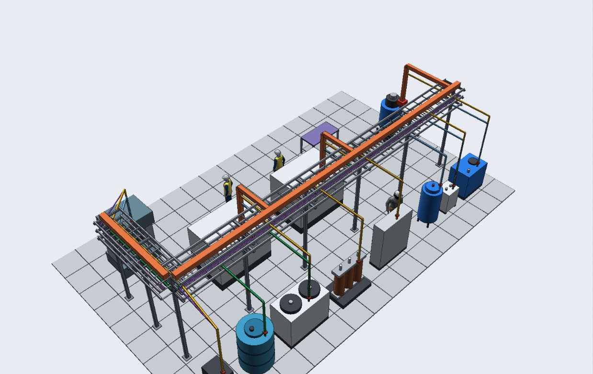
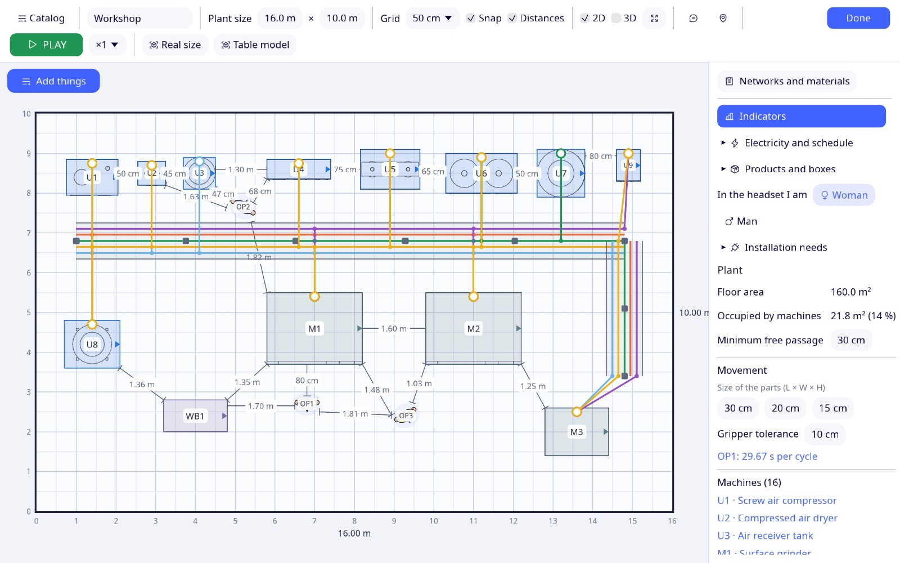
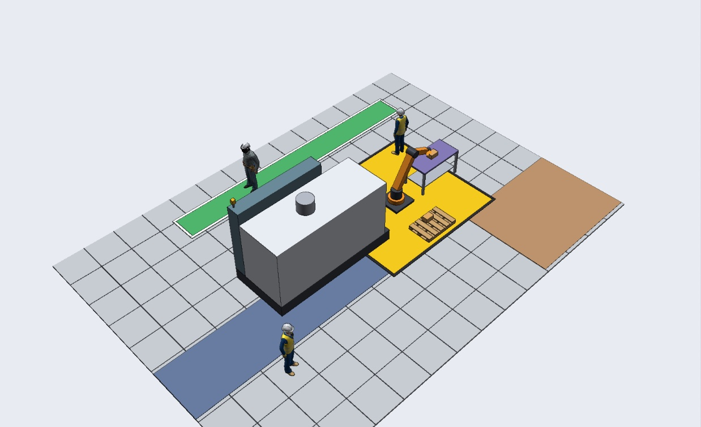
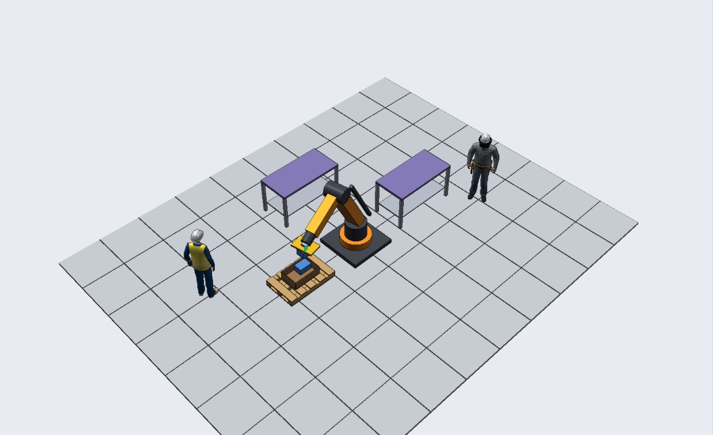
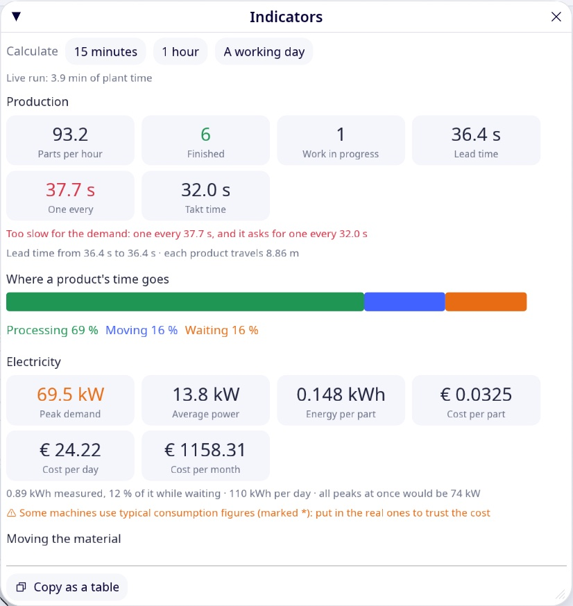
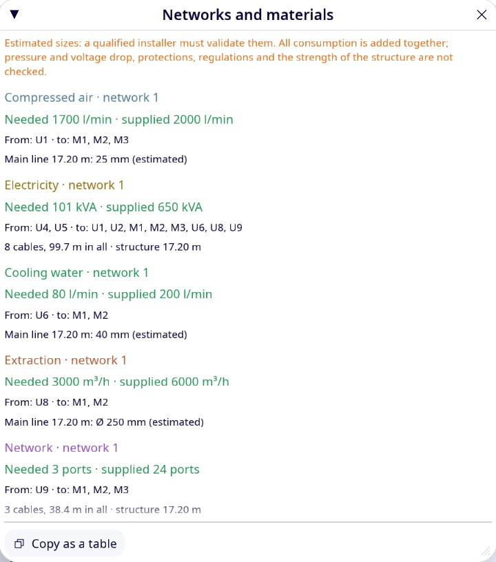
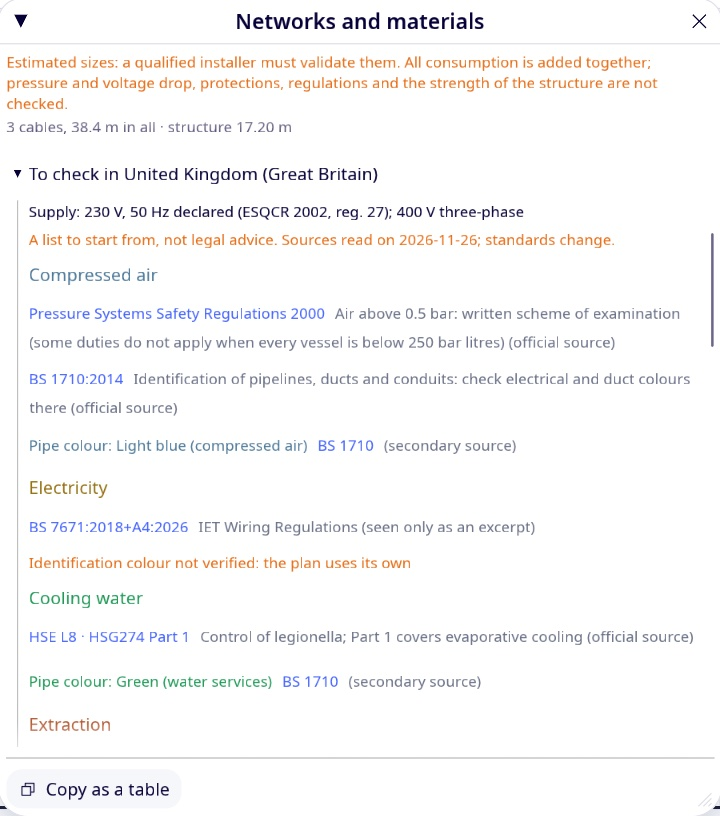

Plan the factory to scale, run it, and see what it needs before you build it: machines, people, material flow, energy and installations.

Available today in the web version, by invitation. It is not yet in the public downloads. To change a plan, turn on the add-on “Digital twin” (Board menu ▸ Add-ons).
Set the size of the building, draw walls and doors, and place machines, robots, conveyors, benches and people. Distances between neighbours appear as you move them.

Move a robot by its tool, record the sequence and run the whole plant: parts appear, machines process them and the next station picks them up. Operators can be posed and recorded too.

Choose where to take from and where to build, the columns, rows and layers, or a box to fill first. Ensemble writes the robot program, which you can read step by step and correct.

Run the plant and read output, lead time and takt time, where the time of a product goes, and the electricity it costs with your own price per kWh.

Draw an overhead structure with its pillars and trays. Machines connect to it, and Ensemble adds up the demand against the supply and lists the materials.

Choose the country and see which standards and regulations to check for each installation, each with a link to its source and how firm that source is.

Use it free on your own devices, and bring your team in when you need to.